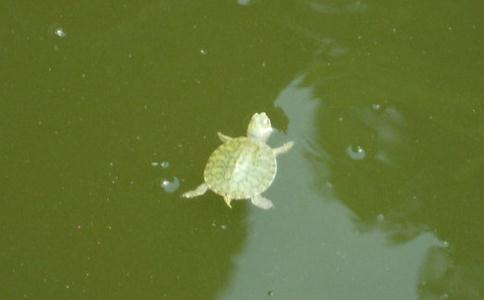

放生的意义应该非常广大，在此简要而言，应有三大方面：
对他而言，放生是救命行为，使其生命得以延续；放生即流露慈悲、是慈悲心的体现，人当有好生之德，不应滥杀无辜。仅仅为了图一时口福，更是不该；以他生命获取钱财，则是不尊重生命的鄙恶行为。
对己而言，放生是种长寿之因，使得自己乃至父母、亲友临难得遇贵人相救。如《药师琉璃光如来本愿功德经》中所说：“放诸生命……病得除癒，众难
对众而言，放生是解怨、息瞋的途径之一，也是
放生可转劫浊成
慈悲即是责任，尽责任才是真慈悲。是否尽责，主要表现在以下四个方面：
一是救生还是扰众。这要看被放的众生的生命是否面临伤害或正在遭受伤害，如果到养殖场去预订、捕捞或教人捕捞，即成为惊扰众生。若去养殖场，不如到渔码头，有捕捞船上岸，即截留返航入江放生，或许更好、更方便。
二是观察被救众生是否已有伤害。若有伤害，要给予及时救治或安排救治环境。
三是对被救众生的生活习性是否了解，这关系到你将为被救众生选择什么样的新的生存环境。若不了解，极有可能制造更多的“万人坑”，尤其是在集体大规模水体放生行动的时候。
四是为被救众生选择合适的新环境。这一环境是要让被救众生能够继续生存、长期生存。
三、放生的内容时下放生，以市场动物放生为主导，这也确实合乎现代人生活节奏强、需要简便而为的心态。但是，这样一来，在“简便的行动”里，切切注意放生责任，否则不是放生、就是放死，不可不慎。
其次，流浪动物的救助与收养也是值得付出巨大慈悲的。
再者，“人命关天”的人的生命受到来之于疾病、地震、台风、海啸等等灾难的围困与侵害时，也是“救命如救火”的大放生时刻。
此外，应该大力提倡
素食指不食荤菜、腥肉。荤指有辛味的蔬菜，如五辛（蒜、葱、韭、薤、兴渠）等，令人智暗、神晕、障般若，诱发贪痴，天龙八部不乐此味，
何况素食品种繁多、营养丰富，有益健康。腥臊之物，只是徒增贪瞋，令人爱染而不思割舍，从而引发种种疾病；智人当戒、愚人当知，如何选择全凭明智与否。
四、放生程序1、遇见生命将面临伤害或已受伤害但尚存生机。
2、发心救助，一面以最大的可能、以种种方便劝导、抵御伤害之继续，一面立即着手准备救助的必要助缘。
3、救下被伤害者，并加以保护（包括医治、养护）。
4、了解、寻求被救者的生存适应环境（包括其天性环境和被救时身体状况的生存环境要求）。
5、为被救者举行适宜的加持仪式或法会，给予能给予的、有可能接受的、心灵上的最大安慰和支持。
6、将被救者送往其继续生存所适应的环境，包括给具备其生存适应环境之善行家庭（或机构）收养的机会。
五、放生应注意的事项放生，重在令其“生”，若不如此，何苦劳命伤财？要避免“功德未增而罪业先生”的无知过患，尽心尽责。
应远离以数量标榜的心态和行为，也应避免以数量定目标的形而上学的做法。开着卡车到养殖场捕捞或预订的“惊扰众生”行为，既不会对市场杀业有任何的减少或影响，也不能保障放生物在新的放生环境内不会被捕杀，只是徒增了社会人士的反感和信众资金的浪费。如果放生环境不能让被放生的生物得以生存，则无异与制造“万人坑”，若为求数量功德而放生，这——能有功德可谈吗？什么人见到大量翻白的这些放生物的照片，都会感慨：“罪过啊，罪过！”
提倡放生的人士，我们不要再盲目地“放生”了，尤其是“法师”或“活佛”们要好
同时，放生的仪式（即为被救者举行适宜的加持仪式或法会），重在“适宜”二字，以简短、能接受为要。不同的生物放生时，要注意什么呢？接下来，我们不妨分类探讨一番。
第一是鱼龟类，这是市场放生最大量的、最普遍的。鱼、龟类均有淡水、海水之分，也有野生与养殖之别，要注意其继续生存所能适应的水体环境和食性要求。
淡水鱼类包括鱼、虾、蟹、龟、鳖等，得放入江河的淡水河段、或湖泊、或寺宇的放生池，海龟、海生物则得放回大海。这应该是普及的常识，但却已发生多起这一常识性的错误。
比较典型的，据说是一慈父为救子命而放生，300万元的金钱龟却因此葬身大海。或许因为救子心切，数量又大，就想到大海而忽略了金钱龟是否能适应生存，更不会想到金钱龟会在怎样的
（1）、野生的淡水鱼类及养殖的鳢鱼、草鱼、青鱼、鲫鱼、鲤鱼、鲶鱼等觅食性强的鱼类可放入淡水江河湖泊之中。
（2）、田螺、黄鳝和泥鳅不宜在沙滩广大的水域，而应放入泥性河底的淡水江河或湖泊。
（3）、养殖性淡水虾类、蟹类、鳖类及河鳗可放入无污染的溪流和一、二类水质的河流湖泊。
（4）、觅食性弱的、红鲤鱼金鱼等养殖鱼类，应放入有人饲养的放生池等水域。
（5）、海龟、海生物则得放回大海。
山龟得放入深山，不可放入水池、尤其是陡坎深水池。
本地淡水龟应放生到有沙滩的江河洲渚上，或寺宇中有沙渚的大放生池里。
如放生池里龟类过多，可与龟类保护机构联系，或联系善行信众、有条件养护的家庭登记领养。
（6）、若一时难以辨别龟的类别和生理习性等，不要急于放出，一边好生养护，一边寻求相关慈善机构的帮助。
（7）、危害性鱼龟类，如巴西龟、鲶鱼、黑鳢鱼等等不可放入放生池等封闭性水体，以免伤害其它鱼类。尤其是巴西龟只能善心家庭收养，不可放入江河湖泊，以免为害江湖。
（1）、青蛙属两栖动物，是农作物的保护神，农村应该禁止捕杀青蛙。由于它们已不能长时间在水下生存，不可放入大江、大河，放回田野是最好的归宿，但要注意放归的地方是否在此前大面积使用过农药。最好与欢迎青蛙、保护青蛙的农场联系放养。
（2）、觅食性强的野生鸟类可放归山野，笼养的观赏鸟不可放入山野，否则会因它们不会觅食而饥渴死亡。
（3）、肉鸽等养殖鸟类也要谨慎对待，要给予在适宜环境中适应的时间，并得继续养护。
（4）、蛇类不可放置在人类或其它动物经常出没的地方，尤其是瞋心较强的毒蛇，以野外深山人迹罕见为宜。
（5）、鸡鸭等养殖家禽，以善行家庭收养为宜，不可放于野外。
（1）、牛、羊、猪等均为养殖性、供肉食的大动物，救下之后要给予好生养护，直至老死。
（2）、狗、猫则为宠养性动物，能遇见的往往是被遗弃的流浪者，那种悲惨的境况实在令人悲悯。被宠消福，宠福消尽、苦境现前。被救助时往往非伤、即残，救助后要先给予治疗，改善后应鼓励善信领养。
野生哺乳动物能得遇相救者，往往以受伤致残，不可急于使用“破伤风”等针剂，因非当天致残，否则反而会令其中毒死亡。若有骨折，关键时尽快将其送至野外山林、多杂草灌木的地方，用树白皮给予复原包扎，让其躺于活血小灌木下自己食用树叶而康复。
此外，还要注意的是“放生与宠养”的关系问题。放生是出于慈悲，在慈悲心之中可以领养上述应由善信人士领养的动物。“宠养”则要避免贪爱，一旦有贪爱之心，则易种下所养动物之因，不可不知、不可不防。
要平等地对待一切生命，并尊重、珍惜不同生物的生命表现形式和生存方式；一旦遇到或发现其生命受到威胁、面临危险时，则应尽力救助，使其远离伤害。尤其是某些破坏性动物，如老鼠，在其生命没有受到危险的伤害时，不必去招惹它；当它开展破坏行为时，则要阻止它。
六、 一者长寿，二者善神为友，三者慈悲心得以自然生起，四者所有动物体认为亲而
长寿者，如《分別
一冤家转多，二见者不喜，三有情惊怖，四恒受苦恼，五常思杀业，六梦见忧苦，七临终悔恨，八
重报报尽，再得人身时亦多短命或多病。
（1）短命。据《佛为首迦長者說业报差別经》有十种业，能令众生得短命报：一者自行杀生，二者劝他令杀，三者赞歎杀法，四者见杀随喜，五者於恶憎所、欲令丧灭，六者见怨灭已、心生欢喜，七者坏他胎藏，八者教人毀坏，九者建立天寺、屠杀众生，十者教人战斗、互相残害。
以上十种行为与思想，均得短命之果报。
《分別善恶报应经》记载，输迦长者请问：
（2）多病。《分別善恶报应经》记载，佛告输迦长者：有十种业，一自坏有情，二劝他令坏，三随喜坏，四赞叹坏，五不孝父母，六多结宿冤，七毒心行药，八悭悋饮食，九轻慢圣贤，十毀谤师法，如是十种获多病报。这里的“坏”字，包括伤害和改变，一切动物肉类的加工和食用均应包含其中；“劝他令坏、随喜坏及赞叹坏”三者，最为严重的要数那电视广告--- 肉食类广告，那活生生的甲鱼、或鲜红的肉类非常容易增上人的贪欲，不但厂家、店家、广告单位犯上述三大罪过，电视观众也极易产生“随喜和赞叹”二大过患，一不小心、在无意间就种下了多病之因，这样的广告真是罪过！
（3）果报来由
杀生者总以为被杀者是无知的、可欺的。诚不知，是自己的无知和愚痴。无知在生命是相续的，无知在被杀者被杀后能明白真相。
于是有了冤冤相报，于是有了“死鬼”索命，于是有了临终前、或病重时的怨魂相聚。为什么呢？因为人或动物，是由神识与肉体的结合，构成为有情生命（没有神识，则为无情，如草木等）；又因不同的业力作用，形成不同的生命形式。当人或动物被杀后的不定时间内，其神识即会离开肉体、形成中阴“意生身”，哪怕是在黑暗的情况下被杀，在其离开肉体后，即能了知被杀前后能感知的全过程，因为中阴形式的神识之本能是肉体形式之本能的九倍。何况这种被杀的痛苦场面，在他（它）未被业力牵引去投胎之前，每天的这一被杀时辰都将重复经历、重复显现，于是肉身时不能知道的、这时均能明白，因为神识有记忆和回忆的本能，那种痛苦啊，一次比一次难受，报复之心也就一次比一次强烈。
假如是瞋心尚未泯灭的你，真相大白后你会做什么？复仇？在瞋心的驱使下，当然会复仇。尤其是瞋心重的动物，更是如此，第一反应必定是复仇，因为这个时候的它们好像也没有别的事情好做，是不是？
即使它报复的情形我们看不见，但可以想见扯、咬、打、撞、拌等等，假如是你，你能想到的估计都会用上，反正只要让杀它的人痛苦、难受，是不是？身体及周围的生物场紊乱到一定程度时，就会让人生病、多病，多灾、多难、多障碍，乃至出现车祸等种种事故。
即使受业力因缘相牵，去投胎轮回去了，一旦轮回报满，回到中阴身，忆起被杀之恨，必去寻仇。何况不是冤家不聚首，即使轮回又得到任何形式的肉身，也有记忆种子的相续，被狗咬、被蛇咬、被蜂刺、被蚊叮等都是有因果的报复。当报复的力量不足以伤害你的生命时，正好是个提醒，得赶紧忏悔杀生的罪业了！否则，只要对方被杀的仇恨种子不消除，一世相遇一世怨哪，即使只有一次被杀，在它那记忆的
善有善报，恶有恶报，弃恶从善，方是出路。
七、关注“人命关天”人的生命受到来之于地震、台风、海啸等等灾难的围困与侵害时，自然也正是“救命如救火”的紧急救助时刻，得知者当义无反顾。
但那是非常时刻，并非时常可遇。在此值得一提的是被疾病所困的、如白血病等绝症患者的“解缚放生”，我们应充分地利用这一难得的人身之身体的造血机能，捐献造血干细胞，为在死亡线上挣扎的绝症患者带去新生的希望。
生命是平等的，我们能救助弱小的动物，也应教育少儿爱护幼小动物，培养慈悲心；同时，也应放放我们自己。
对，放生放自己，要把自己从一切缠缚中解放出来。从放生动物、到培养慈悲心，从利他、到利己，自他不二地开展放生事业，最终彻底解脱一切生命，才是我们的现代大放生。